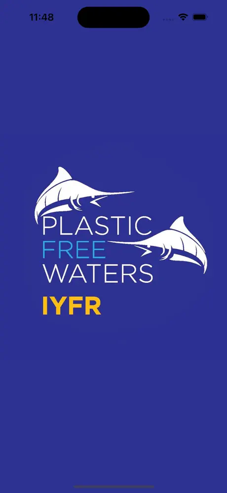
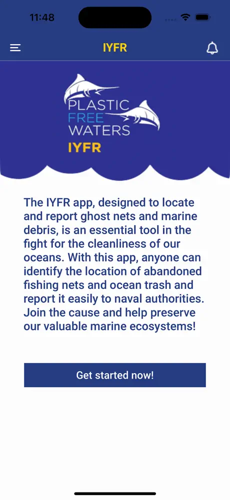
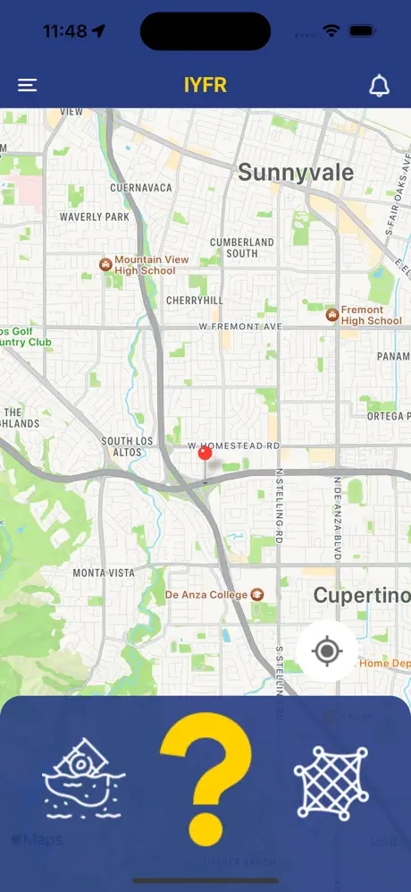
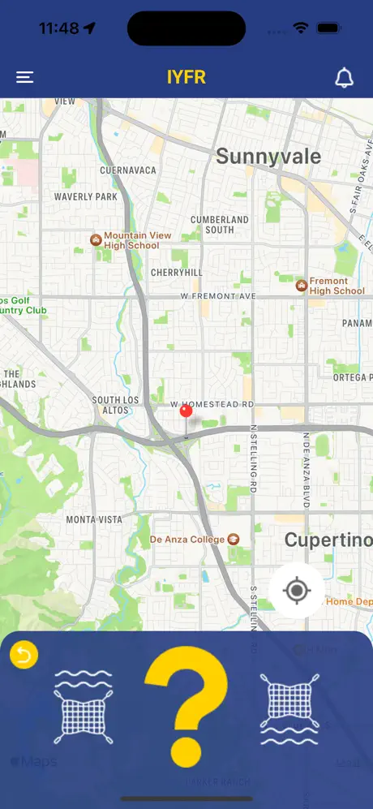
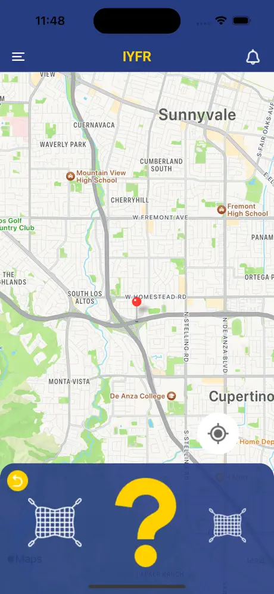
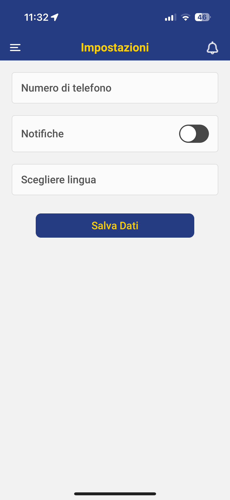
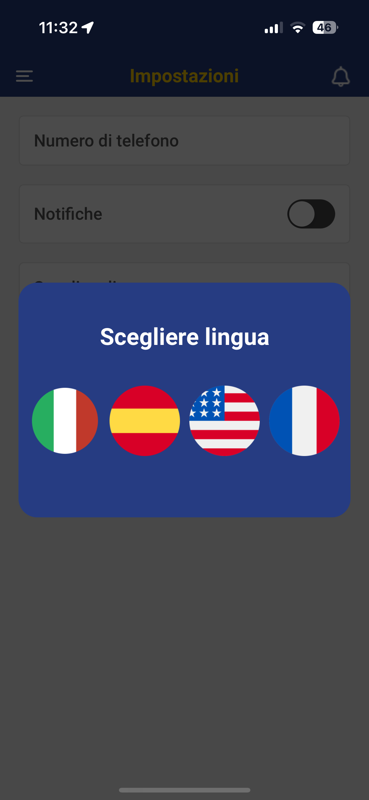
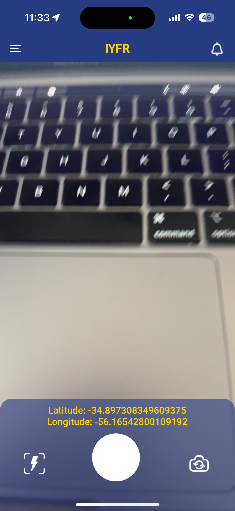
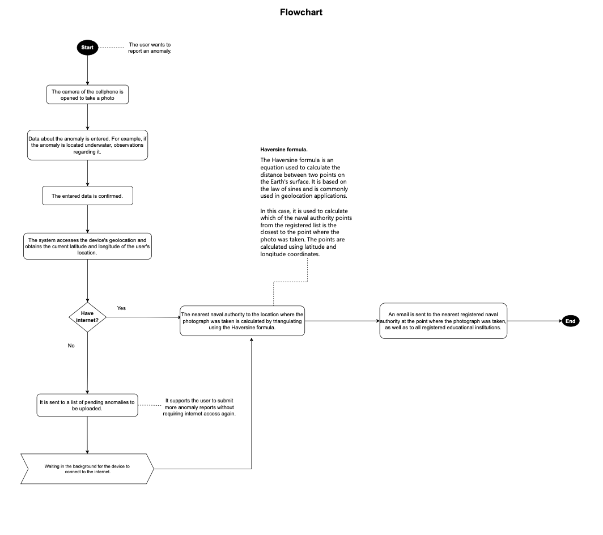
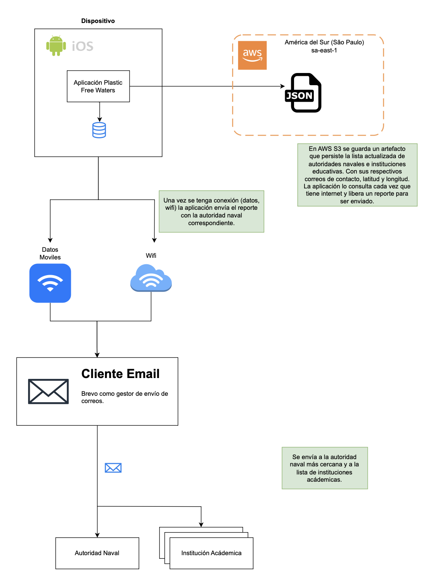

Hola, me llamo Tomás Silva Pastorini
Soy desarrollador fullstack


Plastic Free Waters (IYFR - Rotary Club Italy), agosto de 2023
La aplicación Plastic Free Waters permite a los usuarios señalar redes de pesca abandonadas y residuos en el océano, y notificar de inmediato a las autoridades navales. Ante la falta de internet o de señal en el mar, los reportes se almacenan localmente hasta que se restablece la conectividad. Luego, se activa un servicio de AWS Lambda que se coordina con la autoridad naval más cercana y envía las notificaciones por correo electrónico. La aplicación está disponible en Google Play Store y App Store, y fue creada con React Native y Expo SDK.
Plastic Free Waters fue diseñada para funcionar de manera eficaz incluso en las difíciles condiciones del océano abierto, donde la conectividad a internet suele ser poco confiable. La aplicación permite almacenar los reportes localmente en los dispositivos cuando no hay señal. Una vez restablecida la conectividad, los reportes se suben automáticamente. A continuación, se activa un servicio de AWS Lambda que se coordina con la autoridad naval más cercana y envía las notificaciones por correo electrónico. La aplicación está disponible tanto en Google Play Store como en App Store, y fue desarrollada con React Native y Expo SDK para garantizar la compatibilidad multiplataforma.
Uno de los desafíos más importantes fue lograr una integración fluida con los servicios en la nube, en particular con AWS Lambda, para gestionar el flujo de datos y comunicaciones. La complejidad de establecer un canal de comunicación confiable y seguro entre la aplicación y el servicio en la nube exigió pruebas exhaustivas y una cuidadosa optimización. Manejar de forma eficiente el almacenamiento y la sincronización de datos, sobre todo bajo condiciones de conectividad variables, fue otro obstáculo técnico. Desarrollé mecanismos robustos de manejo de errores y protocolos de sincronización de datos para garantizar que ningún reporte se perdiera ni se duplicara.
Otro desafío estuvo relacionado con la comunicación con el cliente, ya que muchos de ellos hablaban italiano. Para resolverlo, tuve que elaborar diagramas y documentación detallados en varios idiomas. Esto fue fundamental para que todas las partes interesadas, sin importar su idioma, pudieran comprender el funcionamiento de la aplicación y el proceso de desarrollo. Crear documentación y diagramas multilingües ayudó a superar la barrera de comunicación y aseguró que todos los involucrados tuvieran una visión clara del avance y los requisitos del proyecto.
El exitoso lanzamiento de Plastic Free Waters ha tenido un impacto positivo en los esfuerzos de conservación marina. Ahora los usuarios pueden reportar fácilmente residuos oceánicos y redes de pesca abandonadas, lo que ayuda a las autoridades navales a responder con mayor rapidez ante estos riesgos ambientales. La capacidad de la aplicación para funcionar sin conexión y sincronizar los datos una vez restablecida la conectividad permite reportar residuos incluso desde los lugares más remotos del océano.
La integración con AWS Lambda ha agilizado el proceso de notificación, ya que garantiza que la autoridad naval más cercana sea informada de inmediato, lo que ha mejorado los tiempos de respuesta y la eficacia. La disponibilidad de la aplicación en las principales tiendas de aplicaciones la ha hecho accesible a un público amplio, lo que ha contribuido aún más a su impacto.
Enlace a la aplicación en App Store









